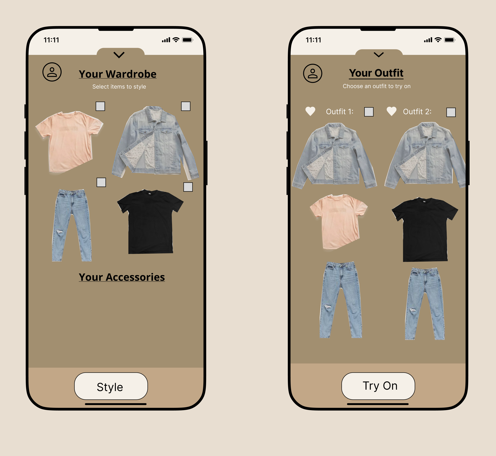

Style-It
Style-it is a clothing app designed to help users create new outfits
from existing clothes in their closet. The app has several features
that allow users to take photos and save their clothing in a catalog
to be styled in various ways, and a try-on feature to simulate the
outfit on themselves.
Problem
The feeling of not knowing what to wear in your closets
Men and women struggle to find new outfits to wear in their closets.
Solution
Users can upload their clothes
-
Users can take photos of existing clothes/accessories in their
closets and choose the articles of clothing they would like the app
to auto-generate.
The app will auto-generate outfits
Users can select an auto-generated outfit to try on or heart their
favorite outfits to try on later.

Users can try-on outfits in the app
Users can select an auto-generated outfit to try on. This eliminates
the hassle of having to try-on many different outfits. This also
allows the app to be used anywhere.
Process
I envisioned this app to be a straightforward personal tool for users to
use anywhere.
I began to formulate what my users goals were and a task list of what I
would like the app to accomplish.
User Tasks
-
User must take photos of clothes/accessories they are considering to
wear and choose the articles of clothing they would like the app to
auto-generate.
-
The user can set up their phone and stand in front of it, so the app can
simulate the outfit on them. This helps users to visualize the outfit on
them without the hassle of trying it on. This also aids in the apps
ability to be used anywhere.
Sketches/Low-fidelity Wireframe
Conclusion
This is my very first UI/UX design project I completed for a class. We
were given complete freedom to identify a problem and brainstorm a
solution. It can be difficult to find and style outfits in a closet
full of clothes. So, I attempted to design an application to combat
this issue. Reflecting back on this project, I would focus more on
improving the UI and refining this idea.